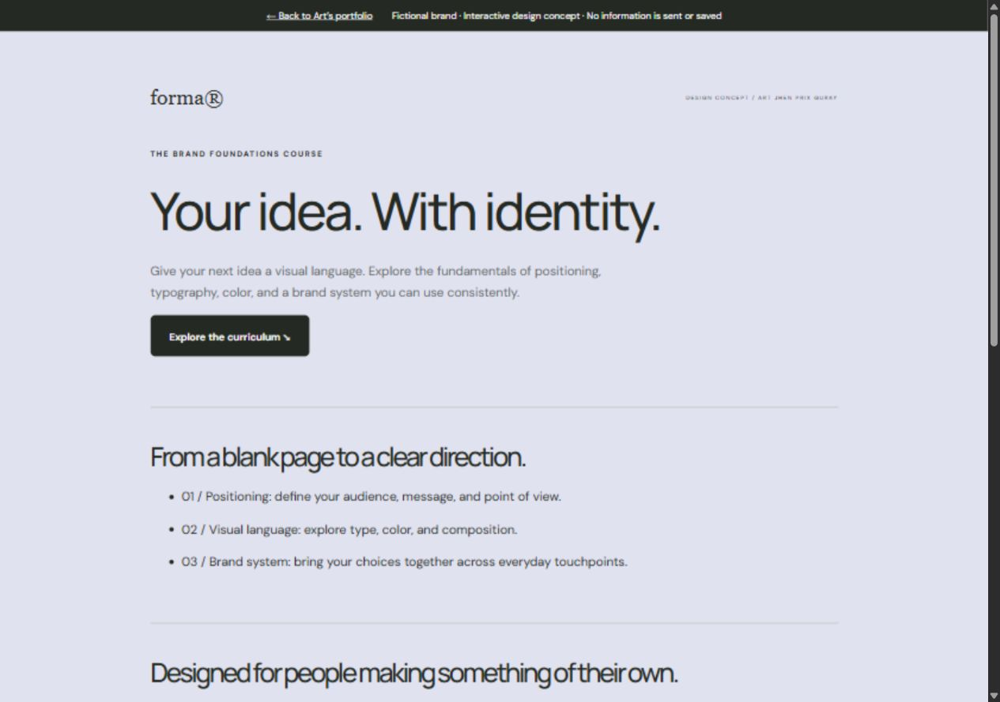
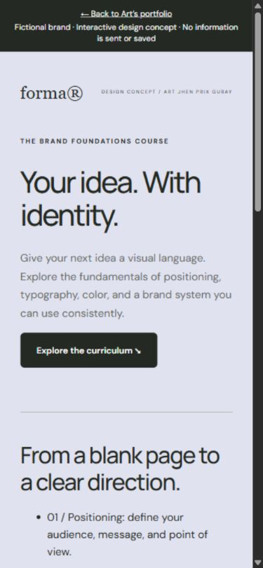

Core promise
Introduce the relationship between an idea and its identity without promising commercial results.
FORMA / ORIGINAL CONCEPT CASE STUDY
Create a fictional brand foundations course funnel. The concept demonstrates how curriculum and fit can support a purchase decision; it does not sell a real course.
Self-initiated concept · Fictional brand and audience · No client engagement or measured results
Try the Forma interactive demoIndependent creators exploring how to give a new idea a visual identity. They may be beginners, so the page needs to explain the learning path and prerequisites in ordinary language.
This is a proposed journey. A real engagement would validate the audience assumptions and offer facts before design.
Introduce the relationship between an idea and its identity without promising commercial results.
Three specific modules let visitors evaluate the content instead of relying on broad transformation claims.
Describe the beginner context and practical scope so visitors can self-select.
Explain prerequisites and the concept status. A live course would need verified instructor details, lesson previews, price, access period, and terms.
Use a single action appropriate to this concept. There is no false countdown, checkout, or enrollment confirmation.
The wireframe prioritizes the curriculum directly after the promise. The final design uses a lavender foundation and strong type to echo the subject of identity. The hierarchy moves from the broad idea to concrete modules and finally the interest form.
Modules remain in their original reading order on both sizes. Short paragraphs and full-width fields prevent the mobile version from becoming a squeezed desktop layout. FAQ disclosures keep optional detail available without hiding the core offer.


These are hypotheses, not results. With sufficient traffic, I would agree on a primary metric, run one change at a time, and account for traffic quality and uncertainty before drawing conclusions.
Module titles alone versus titles with a sample exercise.
Primary measure: Interest registrations per visitor.
Check whether concrete examples improve understanding, not just time on page.
“Explore the curriculum” versus “See what you’ll learn”.
Primary measure: Curriculum-to-interest progression.
Keep the rest of the offer unchanged to isolate the wording.
Confirm the offer and audience through discovery, replace concept content with verified facts, connect delivery and contact tools, then evaluate the live journey. This portfolio concept demonstrates design reasoning; it does not establish conversion uplift.
Talk about your funnel